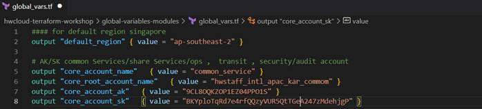
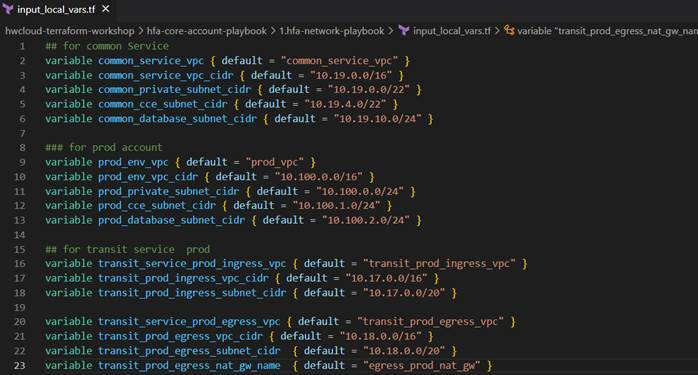

Huawei Cloud Resource Provisioning with Terraform
Introduction
This workshop aims to educate cloud practitioners on the use of Terraform to provision Huawei Cloud resources. Terraform is an open-source Infrastructure as Code (IaC) tool that practices a declarative approach which then allows you to define the cloud resources in human-readable configuration files that you can version, reuse, and share. Terraform facilitates the management of low-level components such as computing, storage, and networking resources as well as high-level components like DNS entries and SaaS features.
Learning Outcomes
This workshop provides a hands-on lab by introducing you to the provisioning of Huawei Cloud resources with Terraform and Terraform Providers using IaC. It is composed of several modules in which each module has a different learning objective. Throughout the workshop, you will be exposed to the HashiCrop Language (HCL), the low-level syntax of the Terraform language, and the Huawei Cloud provider for Terraform which leverages the Huawei Cloud control API to provide a set of API actions required for resource provisioning and managing.
At the end of the workshop, you will be able to:
· Use Terraform to automate Huawei Cloud resource provisioning in a declarative way
· Use module blocks to call configuration files in root modules under a different directory
· Use Terraform to manage resources in a cloud environment
Target Audience
This workshop has been developed specifically for the engineers and operators who work on Huawei Cloud resources. Anyone interested in Terraform is welcome.
Duration
On overage, completing all the labs in this workshop will take around 3 hours.
Prerequisites
Before entering this workshop, you should have some familiarity below:
· Basic understanding of Huawei Cloud resources
· Basic understanding of Terraform command line
· Basic understanding of Terraform modules
Getting Started
Prerequisites
The following pre-requisite is required to kick-start the hands-on lab:
· A computer with a stable internet connection and Terraform installed
· A Huawei Cloud Testing account with required IAM least-privilege permissions
· Basic knowledge of Huawei Cloud and Terraform
Open the Huawei Cloud console
You may navigate to the Huawei Cloud console via this Huawei Cloud Login. On the login page, enter the provided temporary credentials by your administrator to access the console.
Obtain the AK/SK for Terraform usage
To use Terraform on Huawei Cloud, you need to have the credential which is access and secret key (AK/SK) to allow the API requests to be made in Terraform by an IAM user. You may follow the below guide to obtain your own AK/SK.
1. On the upper right corner, select My Credentials.
2. In the My Credentials console, click on Create Access Key.
3. Enter the AK/SK description and click on OK button.
4. Once the key is successfully created, download the key and store it on your local machine for later use.
Obtain the Terraform source code
You are required to clone the terraform source code from GitHub on your local machine to be used in this hands-on lab.
Open the terminal from any code editor, and enter the below command.
git clone https://github.com/hwcloud-apac-pso/hwcloud-terraform-workshop.git
You should get a source code with a similar directory structure as shown below.
Terraform Concepts
This section will give you a brief understanding of high-level Terraform basic concepts and the provider used for resource provisioning in Huawei Cloud.
Terraform Concepts
Below are some of the common terms used in Terraform for deployment:
· Modules: A module consists of multiple resources that are grouped together under the same directory. They are reusable blocks that can be called and reused resource configuration by declaring the required parameters in multiple environments.
· Resources: Resources are the blocks that typically deploy the Huawei Cloud resources in your account.
· Providers: Providers abstract the upstream APIs and define the resources that you will use in your .tf files.
Terraform Provider
Terraform supports many providers for deploying and managing resources. The provider that we will be focusing on in this workshop is the Huawei Cloud provider. You may obtain detailed documentation on the Huawei cloud services that are supported by Terraform on this Huawei Cloud website.
Terraform Command
Below are some of the useful commands used in Terraform for deployment:
· terraform init: It initializes the working directory containing Terraform configuration files and installs any required plugins.
· terraform validate: It performs a syntax check on all Terraform files in the directory specified and displays warnings and errors if any files contain invalid syntax.
· terraform plan: It enables you to preview the actions Terraform would take to modify your infrastructure or save a speculative plan which you can apply later.
· terraform apply: It creates or updates infrastructure depending on the configuration files.
Overall Architecture Diagram
This section provides you with a quick introduction to the overall cloud architecture that will be provisioned in this hands-on lab as shown in the diagram below.
The cloud architecture is differentiated into two parts such as network resources and logging and monitoring resources as explained in the following section.
Network resources
There will be four Virtual Private Cloud (VPC) to be deployed in the Bangkok region to serve different purposes as stated below:
· Transit VPC to control the ingress and egress traffic within the cloud environment or between the cloud environment and the outside world. A NAT gateway will be deployed in production egress VPC to allow the workloads in other isolated environments (other VPC) to be able to access the internet.
· All the shared services such as Domain Name Service (DNS), Single Sign On (SSO) and etc. will be located in common service VPC. Common service VPC peers to the transit VPC so that all the traffic will be routed to the transit VPC before traveling to the destination.
· Production VPC is a place where all the production workloads such as applications and databases are located. It is peers to transit VPC so that all the egress traffic will be routed to the outside world via the NAT gateway. The routing is configured to enable the production workloads to access shared services via the VPC peering in transit VPC.
Logging and monitoring resources
Cloud Trace Service (CTS) is enabled to perform logging and monitoring. It will report the system/data trace to the Log Tank Service (LTS) in which you can query the logs in the LTS console with a user-friendly GUI for auditing purposes. The logs can be transferred to the Object Storage Service (OBS) bucket for archive purposes with the encryption of the OBS bucket using Key Management Service (KMS). Key event notification in CTS is enabled together with the use of the Simple Message Notification (SMN) service to send an email or SMS alert to the administrator if there is any critical event occurs. The critical events to be monitored include the changes in KMS, OBS, VPC, VPN, IAM, and CTS.
Hands-on Lab
In this walkthrough, you will be guided step by step on how to provision multiple resources on the Huawei Cloud environment.
Insert Account Information and Credentials
Action Required
1. Search for the global_vars.tf file under the global-variables-modules directory, insert the information such as account name, access and secret key, and region where you want to provision cloud resources. You may refer to this Region and Endpoints for available regions and endpoints in Huawei Cloud.
Example Result:

Action Required
2. Run the terraform apply command to output all the defined information.
Network Resources Provisioning
Under the hwcloud-terraform-workshop\hfa-core-account-playbook\1.hfa-network-playbook directory, performs the following action to provision the network resources including VPC, NAT Gateway, VPC Peering, and configuring the routing:
1. Search for the import_global_vars.tf file, this module is declared to inherit the account information and credentials from hwcloud-terraform-workshop\global-variables-modules.
Action Required
2. Search for the provider.tf file to declare the Terraform provider so that Terraform can install and use them. You may obtain the latest provider version in Huawei Terraform Provider. (Providers are executable plugins that contain code necessary to interact with the API of the service it was written for.)
Example Result:
Action Required
3. Search for the input_local_vars.tf file to insert the VPC information such as the VPC name, CIDR block, subnets, NAT gateway name and etc. The NAT gateway is created by default in the egress VPC. You may use the defined CIDR block for VPC in Overall Architecture Diagram or decide the range on your own.
Example Result:

4. Search for the vpc.tf file, these modules are to declare the VPC resources to be provisioned in the cloud environment by calling the configuration scripts in root modules under hwcloud-terraform-workshop\terraform-hwcloud-modules\terraform-hwcloud-vpc directory.

Action Required
5. Search for the vpc-peering.tf file, create multiple modules to provision the VPC peering connection in between transit VPC with other VPC as listed below:
· Peering between transit production ingress VPC and common service VPC
· Peering between transit production egress VPC and common service VPC
· Peering between transit production ingress VPC and production VPC
· Peering between transit production egress VPC and production VPC
You may need to refer to the variables.tf file under hwcloud-terraform-workshop\terraform-hwcloud-vpcpeering-single-account directory to insert the required parameters for the module block.
Example Result:
Action Required
6. Search for the vpc-peering-nat-routetable.tf file, configure the route to achieve the connection as below:
· Only instance in common service VPC able to access the internet
· Instance in common service VPC able to communicate with the instance in production VPC

Example Result:

Action Required
7. Open the terminal, enter the below commands to initialize the working directory and modules.
cd hwcloud-terraform-workshop\hfa-core-account-playbook\1.hfa-core-account-playbook
terraform init
Action Required
8. Run the terraform plan command to view the resource that will be created on cloud environment.

Action Required
9. Run the terraform apply -auto-approve command to apply the changes to the current infrastructure for resource provisioning. Once the resource is successfully created, you may verify the resource creation on the Huawei Cloud console.
Action Required
10. Run the below commands to provision the ECS instance in common service and production VPC for network connectivity testing purposes.
cd hwcloud-terraform-workshop\hfa-core-account-playbook\Z.hfa-test
terraform init
terraform apply -auto-approve

Action Required
11. On the Huawei Cloud console, remote login to both the ECS instance in common service and production VPC.
Perform the following ping test and verify the result.
· Ping 8.8.8.8 from common service ECS instance (expected result: Ping successful)
· Ping 8.8.8.8 from the production ECS instance (expected result: Ping unsuccessful)
· Ping common service ECS from production ECS (expected result: Ping successful)
· Ping production ECS from common service ECS (expected result: Ping successful)
Congratulations! You have done the first part of the lab, let’s move on to the remaining part of this hands-on lab.
Logging and Monitoring Resources Provisioning
Under the hwcloud-terraform-workshop\hfa-core-account-playbook\2.hfa-logs-playbook directory, performs the following action to enable the system and data trace in CTS, and report the trace logs in LTS while storing the logs in the OBS bucket for archive purposes:
Action Required
1. Search for the input_local_variables.tf file, insert the retention period of the logs to be stored in the OBS bucket.
Example Result:

Action Required
2. Search for the cts.tf file, and create a module to provision a data tracker and OBS bucket. You may need to refer to the variables.tf file under hwcloud-terraform-workshop\terraform-hwcloud-cts-local directory to insert the required parameters for the module block.
Example Result:
Action Required
3. Open the terminal, and run the below commands to provision logging and storage resources on the cloud environment.
cd hwcloud-terraform-workshop\hfa-core-account-playbook\2.hfa-logs-playbook
terraform init
terraform apply -auto-approve
You may verify the result on the Huawei Cloud console.
Under the hwcloud-terraform-workshop\hfa-core-account-playbook\3.hfa-notify-playbook directory, performs the following action to enable and configure the key event notification in CTS:
Action Required
1. Search for the input_local_variables.tf file, insert the required information such as email and phone number.
Example Result:

Action Required
2. Search for the cts-imp-notify.tf file, and create a module to provision the key event notification resource. You may need to refer to the variables.tf file under hwcloud-terraform-workshop\terraform-hwcloud-cts-notification directory to insert the required parameters for the module block.

Example Result:
Action Required
3. Open the terminal, and run the below commands to provision logging and storage resources on the cloud environment.
cd hwcloud-terraform-workshop\hfa-core-account-playbook\2.hfa-logs-playbook
terraform init
terraform apply -auto-approve
You may verify the result on the Huawei Cloud console.
Resource Cleaning
Navigate to the below directory by following the sequence to delete all the resources when it is no longer required by using terraform destroy -auto-approve command. Open the Huawei Cloud management console on the browser to make sure that all the resources have been deleted successfully to avoid any additional charging fees.
1. hwcloud-terraform-workshop\hfa-core-account-playbook\3.hfa-notify-playbook
2. hwcloud-terraform-workshop\hfa-core-account-playbook\2.hfa-logs-playbook
3. hwcloud-terraform-workshop\hfa-core-account-playbook\Z.hfa-test
4. hwcloud-terraform-workshop\hfa-core-account-playbook\1.hfa-network-playbook
Conclusion
In this workshop, we have created Huawei Cloud resources with the use of Terraform. We learned how to:
· Use Terraform to automate Huawei Cloud resource provisioning in a declarative way
· Use module blocks to call configuration files in root modules under a different directory
· Use Terraform to manage resources in a cloud environment